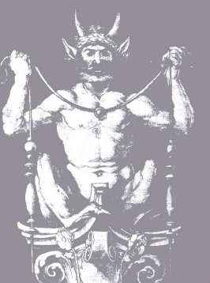
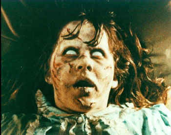
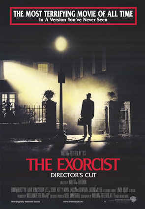
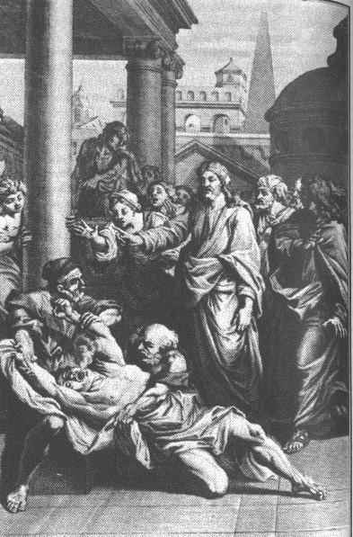

|
Exorcism In the olden days, primitive people laughably believed that mental illnesses and epileptic fits were caused by evil demons possessing the bodies of humans. They ridiculously treated these maladies with exorcism, a one-time process in which the demons were expelled, allowing the person to return to normal life.In these enlightened times of course, there is no "cure" for mental illness, which is now humanely treated with neuron-destroying drugs, involuntary commitment, neverending codependency with psychoanalysts and intermittent lifelong bouts of hospitalization with other raving lunatics. Thank God for progress! Exorcism is one of the most widespread practices in human history. Almost every known religion has some context in which possession is considered possible, although the interpretation of such possession can vary widely. Various religions, such the ancient Greeks and practitioners of Voudoun (or "voodoo," if you're a neanderthal, non-PC bastard), actually embrace possession as part of their religious rituals. The difference in voudoun, of course, is that the possessing spirit (known as a loa) politely and considerately leaves at the end of the ceremony, with the possessed person's body in pretty much the same shape as he or she left it. When an invading spirit is not so polite and considerate as a loa, exorcism is called for. By far the most famous form of exorcism is the Christian form of the practice, specifically the Roman Catholic ceremony famously depicted in the 1973 schlock horror fest, "The Exorcist." While the details of exorcism are generally not thought to be so Hollywood friendly, the general thrust of the movie gives a pretty good idea of the basic components. Exorcism generally involves a lot of telling the bad spirit to go away. When the bad spirit fails to comply, the exorcist might slap it around (or rather, slap around the body of the person unfortunate enough to be acting as host), splash holy water or other sanctified stuff, invoke ancient rituals and, as a last resort, fall down the stairs.  The Catholic exorcism ritual has been largely unchanged since the 17th century, with most of the revisions pertaining to raising the standard for determining when exorcism is a preferable treatment to Thorazine, but the Church rather stridently insists that exorcism remain a viable option, in light of the canonical absolute insistence on the existence of Satan. In fact, the Vatican's chief exorcist is on the record saying it is heretical to deny the reality of possession and exorcism, so disbelievers are just begging to have a Crusade land on their heads. In the case of really tough possessions, the pope gets involved. The number and nature of these incidents are a closely guarded secret in the secret archives of the Vatican, but one can presume these cases are on a Hollywood scale, with victims floating over the bed, projectile vomiting and ominous statements about what the pope's mother might be getting up to in hell. Which brings us, inevitably, to the movie. "The Exorcist" is based on a "true story" of a possession in Maryland in the 1940s. In the real-life case, a boy somewhere between 12 and 15 was allegedly the subject of a full-blown Hollywood-style exorcism, complete with special effects and plot twists. In reality, the details of the story are much contested and several versions of the tale are circulating. Highlights include the infamous "floating over the bed" routine and poltergeist activity of various sorts.  Author William Blatty took these sketchy stories and wove them into a novel, which then became a movie. His protagonist, a 12-year-old girl, performs a long string of various blasphemies, including masturbating with a crucifix, spitting blue and purple bile across the room and famously informing the attending exorcist that his mother "sucks cocks in hell." In addition to permanently scarring the young actress, Linda Blair, the movie's borderline snuff-pedophilia-religious-porn overtones warped a generation of viewers and spawned an unholy slew of inferior sequels. Catholic icon Mother Teresa is perhaps the most famous victim of demonic possession (aside from baseless speculation regarding Wayne Newton). She requested the ritual after a visiting archbishop suggested her insomnia might be demonically inspired. The ritual worked miracles, just like a half-tab of Halcion. When asked if the presence of dirty, filthy, unsanctified devil spunk in her frail body might be considered a negative for her posthumous sainthood campaign, the archbishop told the Associated Press, and I quote, "No way!" Right on, brother! The ultimate uber-exorcist, of course, was Jesus Christ himself, who reputedly cast out bunches of demons on general principal, with the side benefit that it qualified him as the fulfillment of various biblical prophecies. One particularly colorful tale has Jesus casting out multiple demons from a single victim and banishing them to death in the bodies of pigs.  Catholics and movie-makers don't have a exclusive lock on exorcism, however. Evangelical Protestant have a thriving exorcism practice as well. The evangelicals have a less formal approach however, without the Latin pedigree and the chrism. Evangelical exorcism is a lot like evangelical healing a lot of smacking people on the head and crying out the name of Jesus. Some evangelical preachers perform exorcisms over the radio, TV or telephone. Then there's the Assemblies of God, which boasts as its most famous member U.S. Attorney General John Ashcroft. The Assemblies are extremely concerned with possession, because of the "spread of oriental religions and the occult" in America they literally believe that power yoga is a tool of the devil. The Attorney General's religion teaches that the main danger related to demon possession is directly related to a preoccupation with the "sexy" side of demonic activity, such as projectile vomiting. According to the A.G. (the Assemblies, not Ashcroft necessarily): "There seems to be no basis in Scripture for the accompanying preoccupation with external phenomena, such as vomiting up various substances in connection with the casting out of demons (forgetting that demons are spirit beings). In the one instance in which foaming is mandated, Scripture makes it clear that this was a consistent pattern prior to the time the demon was cast out and not a phenomenon occurring only at the time of exorcism." Now that we've cleared that up, the position of the Assemblies is that demonic possession is a very real phenomenon, but "true Christians" are immune by virtue of their... well, virtuousness. So if you're possessed, you have a legit problem, but you probably deserve it.
|